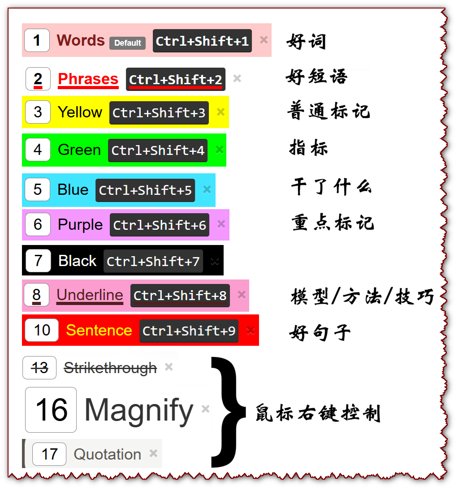
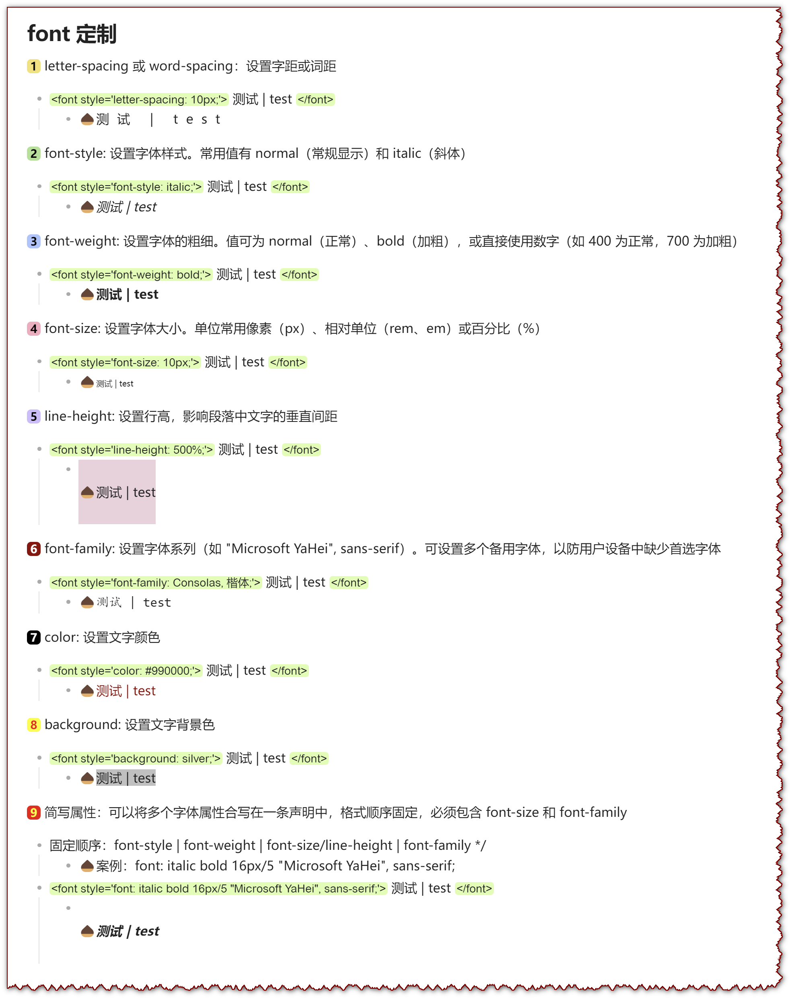

我要开始分享我的内容了！（于2026-05-08 11:30:00）
Baby steps: 怕什么真理无穷，进一寸有一寸的欢喜!
靠谱！主动！积极！学习能力超强！
在这个浮躁的当下，做点踏实的事！
● 具有强烈的探索欲和科研热情，深知行动的必要性和重要性！
● 具有优秀的沟通和表达能力，强烈的团队意识，善于组织和规划，乐于分享所学所思。
● 善于从事务的运行中抽象出背后的逻辑并标准化为高效的作业流程，从而能够将更多的时间用在思考更重要的问题上。
● 长期主义的坚持者，坚信复利效应，注重积累和知识沉淀。
● 立足当下，珍惜当下，热爱记录，坚信箴言“This too shall pass!”
● 为人谦逊，阳光友善，做事踏实肯干，专业技能娴熟，思想积极乐观，生活作风简朴。
兴趣爱好 咖啡、做饭、非常热爱阅读，擅长运动包括跳绳（单人）、乒乓球（2~4人）、羽毛球（2~4人）、飞盘（多人）。
行为准则 如果你发现你周边缺少什么，你就去创造什么！
研究方向（粒度由粗至细）：大语言模型（Large Language Models, LLMs），大语言模型驱动的智能体（LLMs Agent）相关的关键技术，提示优化（Prompt Optimization, PO），智能体记忆（Agent Memory）等。
◉‣ LLMs让我惊艳的时刻：
既然是研究大语言模型（LLMs），那怎么说明这个是值得研究的呢？（它的强大之处在哪里？）
是谁在显卡（nvidia-smi）上部署了模型？咋Kill掉呢？ [2026.07.16]
部署并测试Qwen2.5-14B-Instruct [2026.07.16]
部署并测试Qwen2.5-7B-Instruct [2026.07.16]
Linux终端：写文件、执行.py代码、打印文件内容 [2026.07.16]
1台电脑如何操作多个Git账户？ [2026.05.12]
使用代码调用LLMs的几种方式？ [2026.05.12]
通过VS Code连接服务器：安装MongoDB [2026.06.03]
经典版Eclipse套件安装 [2026.06.12]
GLM-OCR模型部署与测试 [2026.06.13]
据说MinerU也很好用，但是尝试了一翻没有部署成功！如果有愿意分享的朋友可以联系一起琢磨！
CUDA基础与JIT编译环境笔记 [2026.06.13]
如何给你的Github Pages加上评论功能（如本页底部评论区）（待分享）
让大家一起互动起来！
问题 项目中间过程文档如何科学命名？
问题 如何给变量命名？（看看Claude Code的命名！）
问题 好用的Chrome插件有哪些？
问题 Easy Connector 连上立刻 “已注销 VPN、会话已过期” 。 最简单优先试（最快见效）
问题 一些常见软件的公共快捷键有哪些？（助力丝滑操作）
分享 那些能让我们专注于当下的事：
分享 我心目中的好用软件排行榜
分享 一些值得经常浏览的网址
分享 我的「Super Simple Highlighter」配置

分享 我的「CSS-Font」配置

CCF目录(2026) - PDF预览 [2026.05.08]
原则 量变引起质变！
- 量一定要大啊！ （先看个100篇论文再说！）
- 先复现个100篇论文再说！
原则 永不中断！每天都要Show Up！
原则 有花堪折直须折！ 有的用就赶紧用！
- 你小时候舍不得用的笔记本，长大了也用不上了。
- 那些过期的东西，是不是都浪费了？！
原则 决不中断！
- 查理·芒格曾经说过，复利的核心是“不要轻易打断它”。不仅适用于财富，更适用于知识、技能和良好习惯的长期叠加。
- 我已经断过的事情：早起！跳绳！写读书笔记！断过之后又痛定思痛，终于感受到了这句话的魅力，我不能说以后可以完全不断，但，希望这句话能够在我想要打断的时候，提醒我坚持下去！
原则 不是因为要更努力去让能力变强，而是因为能力很强所以才要更努力！
20260622_131230 | 今天大脑中突然闯入了这句话。起因是感觉自己其实在很多方面做得都还不错，不能说杰出但应该能算得上优秀了。前段时间听了网上一位很火的考研培训老师讲了一句话，大概的原句是“你长得很漂亮，不要生活在社会底层，生活在社会底层，你的美貌一点用都没有。”对应过来，我感觉，如果一个有能力的人只是在一些鸡毛蒜皮的事情上使用这些能力，真的太对不起这种能力了！所以，能力强的人更应该努力，进入真正优秀的圈层、发挥自己最大的能力！
原则 MVP，当前时代（2026年6月20日）务必拥有的顶级做事思维！
- MVP（Minimum Viable Product，最小可行性产品） 是产品开发中的一种核心策略。它的核心理念是：用最快的时间、最少的资源，构建出具备核心功能的产品原型，以此来验证市场需求并收集真实反馈。
- 只有MVP才能积累完整经验！
- 只有不断尝试才能完善经验！
原则 每天运动！
运动，受益最多的是大脑。（不信你问大模型！）
原则 成长最快的方式，就是硬着头皮上！
哪有什么不紧张，都是硬着头皮上，上到麻木，上到自然而然，然后就水到渠成了！
原则 “为学日益，为道日损。”
作为博士生，一方面需要“日益”（读论文、做实验），另一方面需要“日损”（减少焦虑、拖延、过度自我批评）。要把这句话当作一个“开关”——感到混乱时，问自己：我现在需要加法还是减法？！
原则 “Ignore the society!（屏蔽外界的声音！）”
——《纳瓦尔宝典》（The Almanack of Naval Ravikant）
原则 最小启动！
犹豫不决就记住“最小启动”这个原则 ！
原则 一书在手，便不觉得浪费时间了。 ——查理·芒格
手里只要捧着一本好书，无论是通勤、等候还是碎片时间，都能瞬间变成自我滋养的黄金期。
原则 1克的行动比1吨的理论更重要。
- 没有行动，信息就是噪音！
- “你去试了吗？就....”
一个“行动触发器”。这句话的价值在于：它不是一个道理，而是一个可以在迷茫时刻对自己喊出来的口令。一定要把这句话写在某个自己每天都能看到的地方（比如电脑桌面便签、手机锁屏）。- 只要你此时此刻不是在执行，你手上的那个动作大概率就是为了逃避执行而专门打造的动作。
如果不想直接行动，仔细品品这句话吧！而且牢记：重要的是 “执行”这个动作本身，而不是结果。
原则 “比失败更可怕的是没有尝试！”
值得做的事情，也值得搞砸。
一件值得做的事即使做得不怎么样也是值得的。
原则 轻柔洗脸、小口喝水、早点起床（倒逼自己早点睡觉）、专心吃饭。
生活真谛其实就藏在那些cliché（陈词滥调）中！
原则 有目的地“委曲求全” = “坚韧不拔”！
该认怂的时候要认怂啊！你看韦小宝，人家就是足够圆滑、机智（推荐：📺鹿鼎記 陳小春 4K (國語中字)）！
原则 领导力不是命令，是吸引。
好好培养员工，让他们具备找到下一份工作的能力。但也要善待员工，让他们永远不想换工作。（"Train employees well enough they could get another job, but treat them well enough so they never want to."） ——《宝贵的人生建议》凯文· 凯利！
© 2026 TAO | 和优秀的人一起，做难而正确（有挑战）的事！